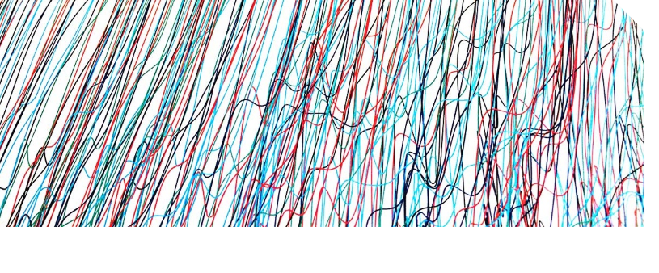
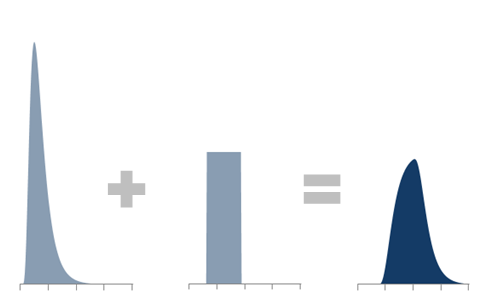
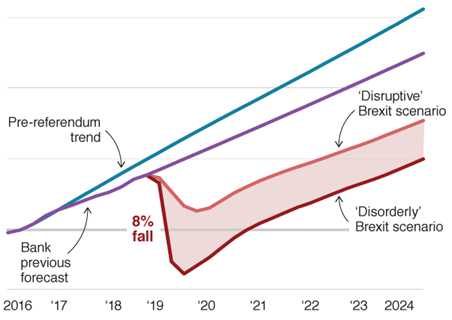
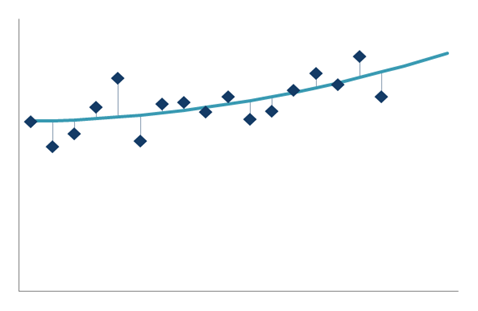

Understanding and Measuring Uncertainty
Introduction
At this stage you should have considered where the uncertainties lie. You now will need to consider whether it is possible to quantify this uncertainty.
This section presents some approaches at a high level then in more detail for quantifying and measuring the uncertainty in your analysis.
General approaches for quantifying uncertainty in an input parameter
We have highlighted ways to think about the size and distribution of uncertainty coming from specific sources. We now bring this together into approaches that can be applied to any source of uncertainty. In most cases, the approach to uncertainty quantification is limited by the data and time available to you.
Table 3.1: Sources of uncertainty
| Can you create a probability distribution? | A probability distribution describes the probability of occurrences of different outcomes. Generally, there are two types of probability distribution; discrete distributions and continuous distributions. Consider whether you have information about the underlying distribution of the parameter. Often data from other sources will be provided with confidence intervals (or standard errors, etc) that can be used to quantify uncertainty. Where such information is not provided, you may be able to approximate these with knowledge of the sample size and design. Distributions can also be created using what you can learn by analysing the performance of previous forecasts against outturn results . The distribution of previous errors can provide the uncertainty distribution for the current forecast. If no quantitative data on the underlying population is available, you may be able to elicit this information from experts . For example, the Delphi Method can be used to ask a panel of experts to estimate the range of uncertainty and use the aggregated responses to produce a distribution. |
| Can you create a range? | A range is similar to a probability distribution, in that it considers the possible outcomes but does not consider the probability of each outcome occurring. If there are data or resource limitations a range can be a simple way to illustrate the uncertainty in a parameter. Historical data can be used to quantify a range. Consider how the parameter has changed over a suitable time period. The maximum and minimum values could provide a sensible range. When using historical data be aware that you will only be able to assess ‘business as usual’ uncertainty. If there are future shocks to the system this may fall outside your historic range. For parameters that have been the subject of academic studies a literature review can be used to create a range. Consider why different studies may result in different outcomes, and which studies are the most suitable for what you are trying to measure. If no quantitative data is available, consider whether there are relevant policy constraints that will limit your range. Judgement from experts can be also be used to create sensible ranges. |
| If it is not possible to create a probability distribution or range, make a qualitative assessment | In some situations, it is not possible to create a probability distribution or a range. In such cases, make a qualitative assessment of uncertainty. This is still useful to analysts and customers to consider the magnitude of uncertainty. You can make qualitative assessments yourself, and by using expert judgement. A simple approach is to Red Amber Green (RAG) rate the likelihood and impact of uncertainty in your parameters. This qualitative assessment should be considered when thinking about the analytical results. If data is categorised as highly uncertain and having a large impact on results, then final outputs will be subject to large uncertainty. |
| Break-even analysis could help re-frame your assumption | A further option to support decision-makers is to use break-even analysis. Break-even analysis helps people understand how much the input has to change before you reach a break-even point so they can consider the probability of this occurring. This is useful to understand at which point a saving becomes a cost or possibly at which point you would take a different decision. Some decision makers will be used to seeing a range around a central estimate. Break-even analysis works backwards – if we were to break-even what would the input be? This could help bring the policy alive and help assumption owners to really consider how realistic the assumption is. |

Common techniques for conducting uncertainty analysis
Below are some common techniques for analysing uncertainty.
Monte Carlo Techniques
If all significant sources of uncertainty can be quantified, along with the correlations between them, then probabilistic methods can provide a picture of the range of possible outcomes and the likelihood of each.
The basic process for a Monte Carlo simulation is to:
- Define a distribution for each input showing the uncertainty in each. These can be simple distributions based on estimation (e.g. uniform, triangular) or more complex distributions based on data (e.g. normal, beta).
- Define the correlations between these inputs
- Randomly generate a value from each input distribution (accounting for correlations)
- Calculate the outputs of the model deterministically
- Repeat steps 3) and 4) many (i.e. thousands of) times
- Analyse the distribution of the resulting outputs
This should be repeated until the key outputs are stable and reproducible at the level of rounding that will be used when communicating the results
- Produces a full probability profile of the range of possible outcomes and the likelihood of each – the gold standard in uncertainty analysis
- Enables analysis of complex interactions between uncertainties within a model
- Produces a visual representation of the range of possible outcomes, that may aid customer understanding
- Can be used to assess the impact of removing or reducing a source of uncertainty
- Highly dependent on the accuracy of the distributions used
- May require more resource than other techniques to build
- Correlations can be difficult to define mathematically, and can give misleading results if not properly accounted for
- Can be computationally expensive
- Outputs may not be reproducible if insufficient iterations are used (effectively introducing further uncertainty to the model)
- Can help assess overall uncertainty when you have uncertainty around many aspects of your model
- Assess uncertainty around a fund forecast
- Estimate the uncertainty around assumptions used in policy costings
- An example of how MoJ use Monte Carlo analysis to assess uncertainty is provided here: Placeholder for link to Monte Carlo Template
- @Risk is an Excel add-in to analyse risk using Monte Carlo. An example of which is provided here: Placeholder for DfE @Risk Example

Deterministic Combinations of Uncertainties
If there are a small number of uncertainty sources, then it may be possible to combine them mathematically, which can be quicker than using probabilistic methods
Outline:
In principle uncertainties can be combined deterministically, by combining the distributions for each input mathematically. This avoids the randomness of probabilistic approaches.
However this method tends to get very complicated once more than a few uncertainties are involved, and probabilistic methods may be easier.
- Deterministic, so outputs are reproducible and quick to generate
- Works with any input probability distributions
- Can be difficult to do with more than 2 or 3 sources of uncertainty
- Assumes that each uncertainty is independent (or correlations must be accounted for)
Example:
Placeholder for Example

Focussing on the Dominant Uncertainty
If one source of uncertainty has a much greater impact than all the others, then the uncertainty due to this one factor might be a reasonable proxy for the overall uncertainty
Outline:
Consider all the sources of uncertainty affecting the analysis and quantify the impact that each has on the overall uncertainty (even if this is approximate or subjective – see section on ‘Defining and Identifying Uncertainty’). If one source has substantially more impact that the others, then simply looking at the uncertainty in this one factor might be a pragmatic approximation for the overall uncertainty measure, ignoring other sources.
This is not a robust way of estimating overall uncertainty, as it ignores all but one source. It should only be used if previous techniques are inappropriate, and there is genuinely one source of uncertainty that has an impact that is an order of magnitude larger than the others. However, when time is tight this may be a pragmatic way of estimating uncertainty.
- Relatively simple and quick
- No need to combine uncertainties
- Focusses attention on the key driver of uncertainty, avoiding unnecessary discussion of relatively minor elements
- Will always underestimate the overall uncertainty as most sources of uncertainty are excluded
- Can dramatically underestimate uncertainty if the source of uncertainty assumed to be dominant isn’t as dominant as believed
Example:
The Accuracy Tracking Tool link to DfE Accuracy tracking tool can be used to estimate the residual uncertainty once the dominant uncertainty has been modelled. This tool assesses the accuracy of different forecast elements and allows you to see the percentage which both the dominant and residual uncertainty contribute to the total error.
Scenario Analysis
If there are many sources of uncertainty with complex correlations between them, then it may be more sensible to use a set of scenarios to illustrate the range of plausible outcomes.
- Identify the individual sources of uncertainty, and the range of possible values for each.
- Create a set of coherent scenarios, setting each source of uncertainty to a value that could realistically occur in parallel with the others (e.g. a crimewave is unlikely to occur if the economy is booming).
- Try to ensure that the chosen scenarios cover the full range of possible outcomes, from highly optimistic to highly pessimistic, with equal attention given to each to avoid bias in presenting the results.
- Then quantify the overall uncertainty in each scenario, combining uncertainties using other methods in this section (the benefit is that this combining can be done manually for a small number of specific cases, rather than having to formulate the combinations mathematically for all possible inputs).
- Don’t need to mathematically define the correlations between sources of uncertainty.
- Gives ‘real-world’ explanations to the range of possible outcomes, which may increase buy-in from the customers.
- Can include low-probability, high-impact events (i.e. system shocks) without needing to define their probability.
- The choice of scenarios is subjective, and may not cover the full range of plausible outcomes.
- Risk of optimism/pessimism bias, with scenarios not evenly distributed around the most likely outcome.
- Provides no information about the likelihood of each scenario occurring
- Needs input from a range of knowledgeable people
Example:
Forecasting where a range of policy options are being considered, particularly where the likelihood of an event occurring is unknown, for example early analysis on Brexit scenarios

Using Past Variance to Estimate Future Uncertainty
If a forecast has been produced repeatedly over many years, it may be possible to use the accuracy of all the previous forecasts to estimate the uncertainty in the new forecast
Outline:
Start by looking at the variance of all of the previous forecasts after one time period, and create a distribution of these variances. This distribution can be used to estimate the uncertainty of the new forecast after one time period.
Repeat for the variance at each subsequent time period to produce e.g. a fan forecast (smoothing if needed).
- Captures all sources of uncertainty
- Avoids the need to identify, quantify and combine individual sources of uncertainty
- Based on real-world performance, so avoids optimism/pessimism bias (the estimated uncertainty may be asymmetric as a result)
- Needs the system to be stable over time (i.e. there’s no reason to think that the system is more/less predictable than in past years).
- Needs the approach to forecasting to have been consistent over the years (i.e. there’s no reason to think that our forecasts will be more/less accurate than in previous years).
- The forecasts must have been produced for a sufficiently long time so that we have enough historical data on the variance to capture the full range of plausible variances
Example:
MoJ prison population forecasting

Judgement
If the previous methods are unfeasible then you could make a subjective estimate of the overall uncertainty using expert elicitation techniques.
Outline:
If the previous methods are unfeasible, then adding a subjective estimate of the overall of uncertainty is an option. Where there is too little information or time to do a quantified analysis, it may be better to provide a judgement on the uncertainty than nothing at all.
Ideally this should be a group decision, using formal expert elicitation methods (e.g. Delphi) to avoid group-think and arrive at a consensus, agreement, or an average (depending on the technique used). If formal expert elicitation isn’t possible, then the judgement of an individual is better than nothing, though less rigorous.
However the uncertainty is estimated, make sure that it is clear that it is a subjective opinion rather than results of analysis to prevent it being misused.
- May be able to be produced quickly, though can take time if using formal elicitation methods with large groups
- Requires little to no data
- Based on real-world performance, so avoids optimism/pessimism bias (the estimated uncertainty may be asymmetric as a result)
- Do not need to consider all sources of uncertainty individually
- Do not need to mathematically combine uncertainties
- Highly subjective
- Needs a group of knowledgeable experts, who can reasonably be expected to have a grasp of the range of possible outcomes
Example:
Providing context around a high priority figure that needs to be submitted quickly.
Analysis based on a data source of unknown reliability
Analysis where the expected range of results would lead to the same outcome
Testing outputs as part of quality assurance
It is best practice to test the outputs of the analysis before using/presenting
After modelling uncertainty, you should always test the outputs of the analysis before sharing the results. This minimises the risk of errors in your analysis and helps you to understand the detailed outputs fully, including the level of the extreme or the most likely values.
Uncertainty analysis may produce ‘extreme outcomes’, so that implausible results or scenarios are given. These can be identified through having a sensible checklist of validation rules (e.g. no negative values allowed) and aided with visualisation and filtering. These implausible outcomes could indicate an issue with the setup conditions of your analysis.
Unusual results may also indicate a weakness in how you have used your chosen technique. For example, if using the Monte Carlo technique, there may be unknown correlation which hasn’t been accounted for, or you might have used an inappropriate distribution for a parameter.
Unusual results may indicate a weakness in the use of the technique
One element to test in your analysis may be potential system shocks, such as a recession. Does your uncertainty analysis need to account for these? It is not always useful or practical to account for system shocks, depending on your analysis, and they may be better treated in a risk register. You should support your users by pointing out system shocks that are common or highly likely to impact.